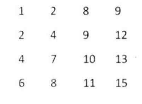
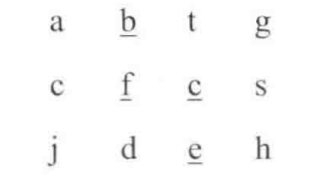

简明记录一些题目相关实现原理以及注意点。
基本数据结构
数组
字符串
链表
树
递归与循环
查找和排序
回溯法
我理解的回溯法，更多的是利用“递归”的子问题特性将返回值带回上一层。上一层有多个这个子问题的一个综合。
动态规划
若果求一个的最优解，最大值或者最小值，而且该问题能分解成子问题。子问题能分解成更小的子问题。也就是大问题依赖于一系列的子问题的值（而不是单个问题的值，如果是单个问题的值，那么是回溯法）。在动态规划中，新的元素添加进去后，改变了原有的分配策略，也就是需要重新动态规划。
贪婪算法
2. 单例实现
注意多线程
3. 找出数组中重复的数字
在一个长度为n的数组里的所有数字都在0~n-1的范围内。
找出数组中任意一个重复的数字。
一般思路
思路一：排序
排序O(nlogn)
思路二：搞一个hash表
O(n) 额外空间O(n)
思路三：根据题目给定的n的长度的数组里有0~n-1的数字这一特征。
3.1 不修改数组找出重复的数字
在一个长度为n+1的数组里的所有数字都在1~n的范围内，所以数组中至少有一个数字是重复的。请找出数组中任意一个重复的数字，但不能修改输入的数组。
不能修改原数组的话
一般解法是用一个额外数组或者hash表
优化思路
分析关键，n+1的数组里所有数字在1~n里。那么我可以通过将1~n里的数组分成两组，遍历数组看哪个小组里的数目大于其本身的组内元素的数目，则这个重复的数字就在哪个小组里。重复二分就可以找到了。
时间复杂度时O(nlogn),空间复杂度O（1）
分析思考方法
思路三的思考方法，是从特性触发。利用二分的思路。（哈哈，这就是为什么要对经典算法的深刻理解的原因了,很多问题就是对经典的问题的应用,理解了经典算法，就是见招拆招）
4. 二维数组中的查找
在一个二维数组中，每一行都按照从左到右递增的顺序排序。每一列都按照从上到下递增的顺序排序。请完成一个函数，输入这样的一个二维数组和一个整数，判断数组中是否含有该整数。

我的思路
哈哈，这个问题，是我自己实现的就是优化思路。
优化思路
选取最右角的数字，若果该数字等于要查找的数字，则查找结束。
若果该数字小于要查找的数字，则踢出这个数字所在行。若果该数字大于要查找的数字，则踢出这个数字所在列。这样每一步都可以缩小查找范围。
5. 替换空格
请实现一个函数，把字符串中的每个空格替换成%20,例如
"We are happy"输出"We%20are%20happy"
我的思路
开辟新的数组，边遍历边输出
时间复杂度O(N)*O(n),空间复杂度O(N)
如果是在原有数组的基础上，进行替换，则需要原有数组又足够的空间。
从上面的解法可以看出，多次空格时，将会有多次的后面元素的移动。
每多一个空格，就会将后面的元素多移动一遍。（这里就是优化的地方，当提出优化要求时，我们先分析有哪些需要优化的东西）
优化思路
还有一种思路，先找出有多少个空格，在遍历只做一次的移动。这时间复杂度时O(N)+O(N)，时间复杂度比上面的低。
5.1合并两个有序数组，合并后有序
有两个排序数组A1与A2，内存在A1的末尾有足够的空间容纳A2,请实现以函数，吧A2中的所有数字插入A1中，并且是有序的。
简单思路
遍历A1,与A2的头比较，是的就加入到A1，并移动A1后面的东西。
这样就会有问题，没吃都会有大量的移动。O( n2 )
优化思路
还是从最后的元素进行比较，大的移动到最后，维持3个指针，
A1的尙未做过移动的的指针p1，A2的最后的指针p2，A1的从后向前移动后的指针。
6. 从尾到头打印链表
输入一个链表的头节点，从尾到头反过来打印出每个节点的值。
思考
一般的思路是将遍历到最后将链表反过来。然后在打印。
这样时间复杂度为O(N)*2,因为要遍历两边。
优化思路(嗯，就是这样的)
利用栈，或者递归，在打印的时候打印它的下一个节点。
7. 重建二叉树
输入某个二叉树的前序遍历与中序遍历结果，请重建二叉树
假如输入的前序遍历和中序遍历的结果中都不含重复的数字。
例如
输入前序遍历序列{1,2,4,7,3,5,6,8}和中序遍历序列{4,7,2,1,5,3,8,6} 重建二叉树
思路
（这个我的思路是有的，当真正实现还是花了点时间了的复习时，可以在用手在纸上写出来）
通过前序遍历确定根，根据中序遍历左右子树。然后重复这个过程，结束条件是到了叶子节点（无左右子树）
public static void main(String[] args){
int [] pre = {1,2,4,7,3,5,6,8};
int [] mid = {4,7,2,1,5,3,8,6};
TreeNode head = createTree(pre,mid ,0,pre.length-1,0,mid.length-1);
System.out.println("前序遍历");
printPreTree(head);
System.out.println("中序遍历");
printMidTree(head);
System.out.println("后序遍历");
printAftTree(head);
}
public static TreeNode createTree(int[] pre,int [] mid,int preStart,int preEnd, int midStart,int midEnd) {
if(preStart > preEnd || midStart > midEnd){//结束条件
return null;
}
//前序遍历第一个节点是根节点
TreeNode rootNode = new TreeNode(pre[preStart]);
//找到在中序遍历的根节点的位置
int location = rootLocation(mid,pre[preStart],midStart,midEnd);
TreeNode lefNode = null;
//存在左子树
if(preStart + 1 <= preStart + (midEnd - midStart)){
lefNode = createTree(pre,mid,preStart+1,preStart + (location - midStart),midStart,location-1);
}
TreeNode rightNode = null;
//存在右子树
if(location +1 <= midEnd){
rightNode = createTree(pre,mid,preStart + (location - midStart) +1 , preEnd,location+1,midEnd);
}
rootNode.left = lefNode;
rootNode.right = rightNode;
return rootNode;
}
public static int rootLocation(int[] mid , int find,int midStart, int midEnd){
//在midStart与midEnd之间寻找根节点的值
int location = midStart;
while(midStart <= midEnd){
if(mid[midStart] == find){
break;
}
midStart ++;
}
return midStart;
}
//前序遍历
public static void printPreTree(TreeNode root){
if(root==null){
return;
}
System.out.println(root.val);
printPreTree(root.left);
printPreTree(root.right);
}
public static void printMidTree(TreeNode root){
if(root==null){
return;
}
printMidTree(root.left);
System.out.println(root.val);
printMidTree(root.right);
}
public static void printAftTree(TreeNode root) {
if(root == null){
return;
}
printAftTree(root.left);
printAftTree(root.right);
System.out.println(root.val);
}
8. 二叉树的下一个节点
给定一颗二叉树和其中的一个节点，如何找出中序遍历序列的下一个节点？树中的节点除了有两个分别指向左，右子节点的指针，还有一个指向父节点的指针。
9. 两个栈实现队列
用两个栈实现一个队列，队列的声明如下，请实现它的两个函数入队与出队。
思路（我没有思考的很全）
假设栈A，栈B，入队时，一次入队1，2，3，4，入队时，将入队的元素依次压入栈A中。出队时，将栈A的元素依次Pop到B中，并将最上面的元素取出（这个元素就是队首元素）。如果再由元素入队时，直接入栈A，再出队时，假如栈B还有元素直接出队。没有的化，就将栈A的元素依次出队放在栈B里。
9.1 两个队列实现一个栈
思路
对列A，队列B，依次入队1，2，3，4，入队1，入队列A，1，2，3，4，出栈时，将元素全部重新入队B。当对A只有最后一个元素时，就是出队的元素。在出队时，将队B的全部出队，留最后一个元素，就是需要出队的。入栈时直接放在非空的后面。
10. 斐波那契数列

思路
从表达式可以看出用递归很好解决。
优化思路一
用递归表达式，因为f(n)有时候会被计算多次造成性能问题。所以只能改成循环来实现。临时记住已经计算过的值。性能更好。
优化思路二
还有一种用矩阵的解法logn，当要求矩阵运算。算法复杂，不太实用。
10.1 青蛙跳台阶
一只青蛙一次可以跳上1级台阶，也可以跳上2级台阶。求该青蛙跳上一个n级台阶总共有多少种跳法。
思考
这里主要是考察通过分析问题能力，数学建模的能力，解决问题的能力
第n级台阶可由第n-1级台阶，也可由第n-2级台阶而来。则实际上就是上面的斐波那契数列。
10.2 快速排序
//写出块排
10.3
11. 旋转数组的最小数字
把一个数组最开始的若干个元素搬到数组的末尾，即数组的旋转。输入一个递增排序的数组的一个旋转，输出旋转数组的最小元素。
思路
普通的遍历求最小值，当然是可行的，时间复杂度是O(n)。但失去了本题的意义。
优化思路
因为是部分有序的。可以通过二分查找思想，二分查找的时间复杂度时O(logn)，通过二分查找定位最小值，二分查找由递归法，也有循环法
12. 矩阵中的路径
请设计一个函数，用来判断在一个矩阵中是否存在一条包含某字符串所有字符的路径。路径可以从矩阵中的任意一格开始，每一步可以在矩阵中向左，右，上，下移动一格。若果一条路径经过了矩阵的某一格，那么该路径不能再次进入该格子。例如下图求是否包含"bfce"的路径。

13. 机器人的运动范围（我觉得这个题目有问题）
地上有一个m行n列的方格。一个机器人从坐标（0，0）的格子开始移动，它每次可以向左，右，上，下移动一格，但不能进入行坐标和列坐标的数位之和大于k的格子。
思考
感觉有两种思路，一种是直接用两个for循环
另一种是用向各个方向找，采用递归回溯的方式.
??我觉得这个题目是有问题的
14. 减绳子(这个问题很经典)
给你一根长度为n的绳子，请把绳子剪成m段。每段绳子长度k[0],k[1],k[m],请问k[0] *k[1]...可能的最大乘积是多少。
思考（采用动态规划的方法，将问题建模，也是比较难的）
长度为1时，不能分割，长度是2时，分割后找出最大值是确定的。长度是3时，分割后的最大值也是确定的。这样根据数学归纳法，每增加一个长度。我可以从与前面已经算好的最长的子问题一个个根据一定的规则推出当前的最大值。而这个规则，就是比较新分隔的两数字的大小中的最大值作为最大值。
优化思路
采用贪婪策略，当n>=5时，尽可能多的剪长度为3的绳子，当剩下的绳子长度为4时，把绳子剪成长度为2的绳子。（这个个实际上要找到一个贪心策略，说实话，需要比较高的数学能力）
15. 二进制中的1的个数
输入一个整数，输出数二进制表示中1的个数
思路
采取移位操作，将一个数每右移一位。然后与1做“与”运算。
1即00001，如果不为1，那么最后一位不是1，若果是1，那么最后一位就是1，然后继续右移。直到原数被移动到为0为止。(这样负数是有问题的,因为负数的表示时在首位是1，不断右移时，最终-1时， //-1, 100000000001,11111111111111，则构成了死循环，所以这种是有问题的)
为了避免循环，变相的思路
将1左移动，与原有数进行与运算，每次与运算，判定结果是否为0；为0就说明原有是1，不为0说明原有不为0；知道运行32位（假设是32位的机器）
优化思路（最好的解法）
把整数减去1，在和原整数做与运算，会把该整数最右边的1变成0。那么重复这么做。直到这个整数是0为止。
```
public static int numberFor1(int n ) {
int count = 0;
while(n!=0) {
n = (n - 1)&n;
count ++;
}
return count;
}
### 16. 数值的整数次方